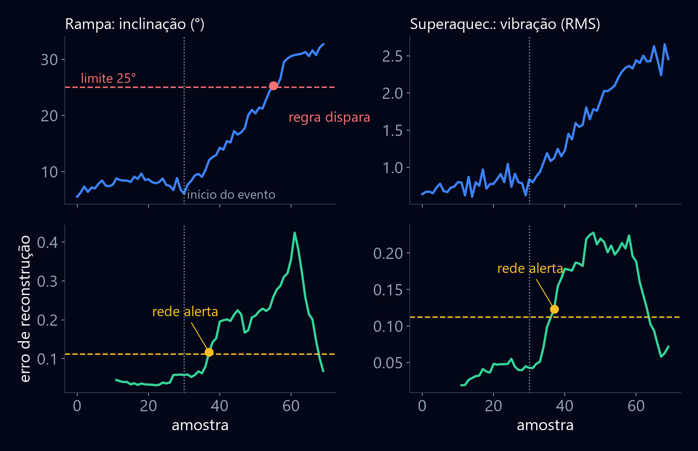

Demonstração: prova de conceito com autoencoder
Dados simulados
Só com operação normal no treino, o erro da rede vira alerta.

Rampa
rede detecta
100%
, regra
92%
rede avisa 18 amostras antes
Superaquecimento
rede detecta
100%
, regra
0%
a regra de segurança não olha para isso
Obstáculo
rede detecta
72%
, regra
100%
limite fixo é a regra pegando melhor
Fonte: prototipo_telemetria.py, semente 42. Alarme falso em 3% das sequências normais. Não mede desempenho real